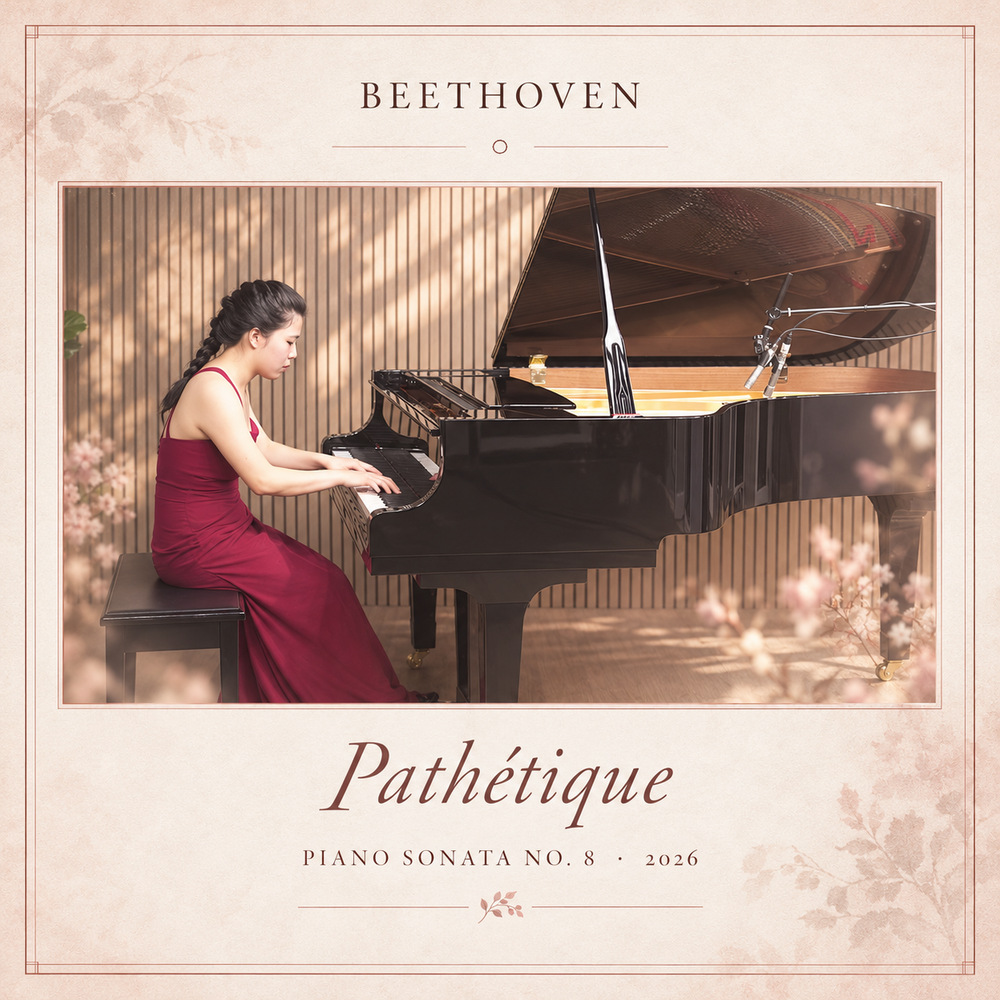
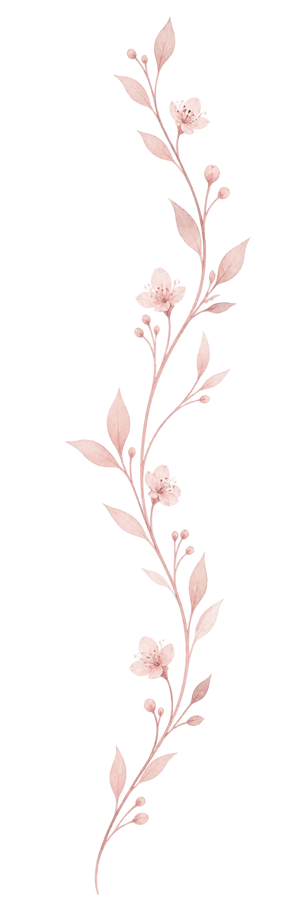
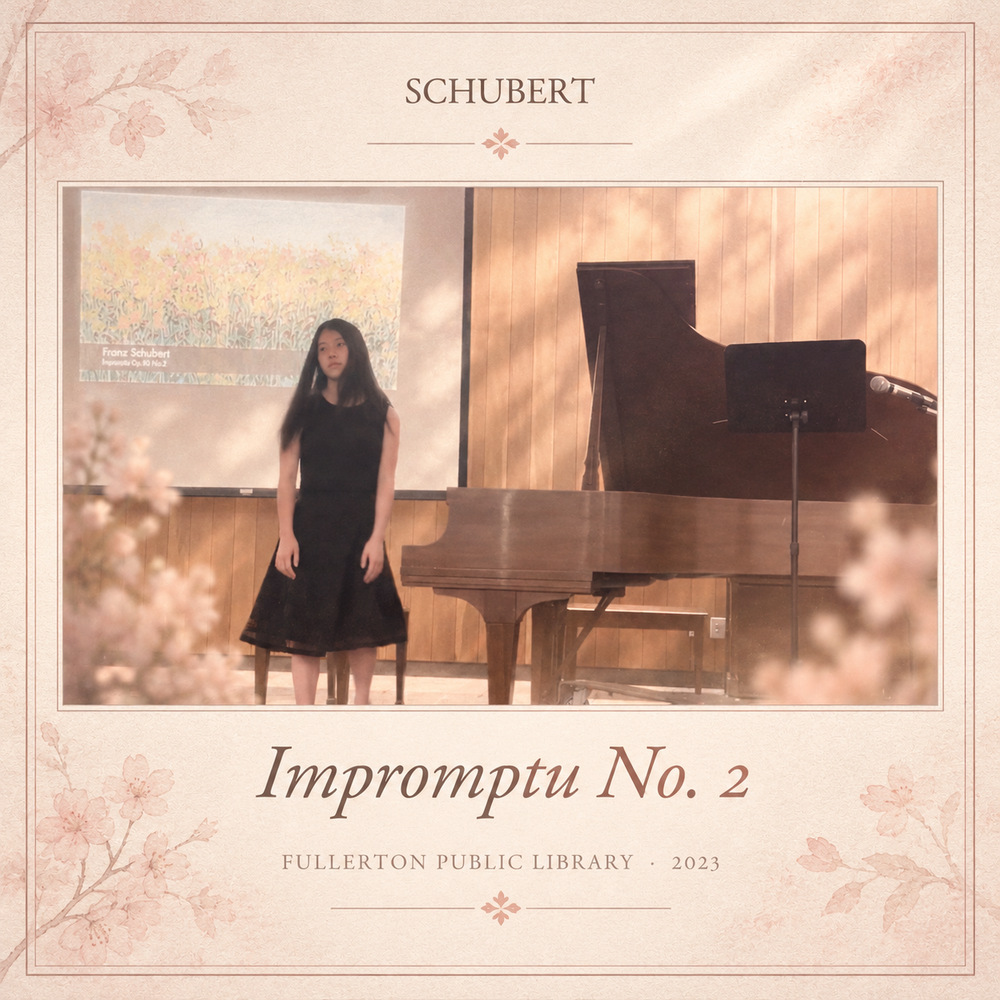

Ludwig van Beethoven
Pathétique

Learning a piece has taught me to be patient with the process. I’ve learned that small improvements, repeated over time, are what eventually bring the music together.

Pathétique
Winter Wind

Impromptu No. 2
We Wish You a Merry Christmas